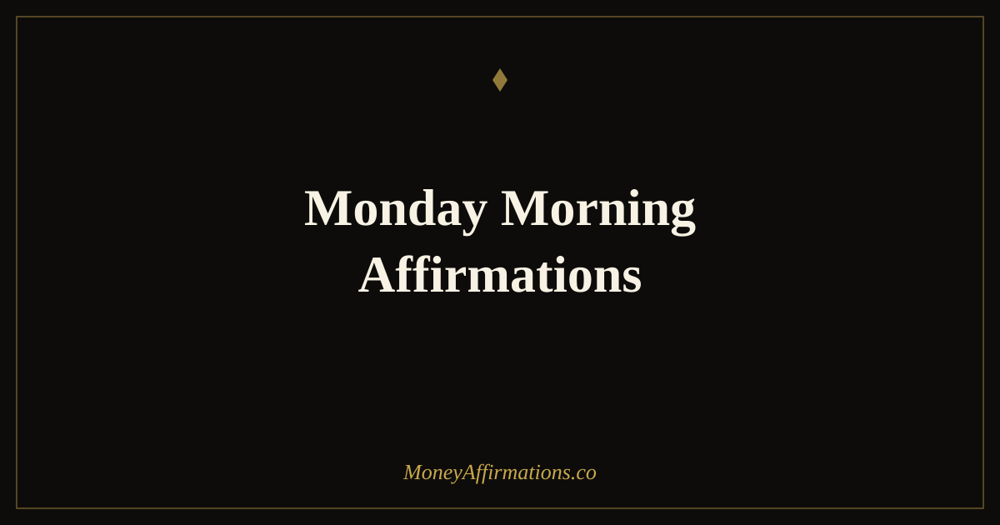

Monday Morning Affirmations: 25 Statements for a Prosperous Week

Monday morning is the most powerful financial reset point in your week. Not because of any mystical quality, but because of something well-documented in behavioural psychology: temporal landmarks — moments that feel like new beginnings — genuinely increase the likelihood of goal-directed behaviour. The start of a new week creates a natural psychological line between the past and the future. What you do in the first hour of Monday morning sets the emotional and cognitive tone for the five working days that follow.
Monday morning affirmations for money take that window seriously. These 25 statements are designed for the moment before the week's noise begins — before email, before news, before the accumulated pressure of commitments already made. Used consistently, they create a weekly anchor: a few minutes each Monday where you return to your financial identity, your goals, and the belief that this week holds genuine opportunity. That anchor, repeated fifty-two times a year, becomes one of the most reliable habits in your financial life.
What are Monday morning affirmations?
Monday morning affirmations combine the psychological power of the fresh start effect with the neurological receptivity of the morning brain. They are present-tense statements used specifically at the intersection of a temporal new beginning (Monday) and a neurological open window (morning) to create maximum impact on the week's financial orientation. Used at any other time, the same statements are useful. Used Monday morning, they carry the compounded weight of both forces.
For money specifically, they set the week's financial intention before reactivity takes over. Most people approach their financial week in response mode — responding to what arrives rather than pursuing what they have chosen. Monday morning affirmations reverse that order. You decide the week's financial story before the week has a chance to write it for you. Pair them with the broader Monday affirmations for money collection for additional statements across the full day.
25 Monday morning affirmations
- This Monday morning I set a clear, prosperous intention for my entire week.
- I begin this week from strength, focus, and genuine financial confidence.
- My goals are clear, my energy is renewed, and this week holds real opportunity.
- I welcome Monday as a fresh start and a new chance to build the financial life I want.
- Every Monday morning I recommit to my financial vision with clarity and calm.
- This week I earn well, spend wisely, and move measurably toward my goals.
- I arrive at Monday with the belief that good financial things happen to me regularly.
- My mind is clear, my intentions are set, and this week is already working in my favour.
- I am productive, purposeful, and financially effective this week and every week.
- Monday is not something to survive — it is the most powerful day in my financial week.
- I begin each week knowing I am capable of creating the income and life I deserve.
- This week I take bold, aligned action toward my most important financial goal.
- I am prepared, energised, and ready to make this a genuinely prosperous week.
- Each Monday morning I choose my financial story before the week chooses it for me.
- My efforts this week compound on everything I have built before — I am always progressing.
- I bring my best thinking and my clearest decisions to every financial moment this week.
- I am grateful for this fresh start and I use it with intention and purpose.
- This week I am open to income, opportunity, and abundance in all forms.
- I release last week's setbacks and step into this week's possibilities with an open mind.
- My Monday morning sets the tone — and I choose prosperity, clarity, and confidence.
- I am the kind of person who uses Monday well and builds consistently from it.
- This week holds everything I need to make meaningful financial progress.
- I face this week's financial decisions with calm, courage, and sound judgement.
- Every week I grow more skilled, more confident, and more aligned with lasting wealth.
- This Monday morning, I claim a week of abundance, purpose, and genuine forward movement.
How to use these affirmations
The practice takes three to five minutes. Before opening any app, sit upright and choose five affirmations from this list — ideally the night before, so Monday morning requires no decision-making. Read each one twice: once aloud from the page, once from memory with your eyes closed. The memory repetition is important; even approximate recall creates a deeper neural impression than reading alone. Finish by writing one sentence: "This week, the most important financial action I will take is..." Name something specific, achievable, and aligned with your larger goal.
This brief ritual serves as a weekly financial contract with yourself. Over time, it becomes the most reliable predictor of the week's financial quality — not because the words are magic, but because consistently showing up for your own goals on Monday morning is itself a form of financial self-respect that accumulates into real results. For a daily extension of this practice throughout the week, daily affirmations for money provides a morning-to-evening framework.
The fresh start effect: why Monday morning is neurologically unique
In 2014, researchers Hengchen Dai, Katherine Milkman, and Jason Riis published a landmark study documenting what they called the "fresh start effect" — the finding that people are significantly more likely to pursue goals at the start of temporal landmarks: new years, new months, new weeks, and birthdays. The effect is not merely motivational; it appears to work by creating psychological distance from past failures, allowing people to see themselves as starting fresh rather than continuing a struggle.
Monday morning combines the fresh start effect with the cortisol awakening response — the brain's natural morning mobilisation that primes attention, motivation, and decision-making for the day ahead. When you introduce clear financial affirmations and intentions at this double-powered moment, you are working with both the weekly reset psychology and the morning's neurological receptivity simultaneously. The result is an anchor that is simply more adhesive than affirmations used at other times. Research on habit formation consistently shows that anchoring new behaviours to existing temporal cues — like Monday morning — dramatically increases the likelihood of consistent practice over time.
Tips to make them work faster
- Choose your five affirmations Sunday night. Removing the decision from Monday morning means the practice begins before resistance can form.
- Write your weekly financial intention immediately after. The affirmation sets orientation; the written intention creates a specific target. Both are needed.
- Say them before checking any device. The Monday morning window closes the moment external demands enter. Protect the first five minutes.
- Track weekly by Friday. Each Friday, note whether you followed through on Monday's intention. This feedback loop makes Monday morning matter — you know you will be measuring against it.
- Keep the practice identical each week. Consistency of form builds the habit faster than variety. Same time, same process, rotated affirmations — that is the formula.
Frequently Asked Questions
Why does Monday morning matter so much for financial mindset?
Monday morning combines two powerful psychological forces: the fresh start effect and the cortisol awakening response. The fresh start effect shows that temporal landmarks like the start of a week increase motivation and goal-directed behaviour. The cortisol awakening response means the brain is neurologically primed for alert, focused thinking. Affirmations used at this intersection have a disproportionate effect on how the entire week's financial decisions unfold.
What is the difference between Monday morning affirmations and regular Monday affirmations?
The morning specificity matters. Monday affirmations used later in the day are still effective, but the morning window — before reactive mode sets in — is neurologically distinct. Morning affirmations leverage the brain's transition from restorative sleep into active cognition, a period when new beliefs encounter less habitual resistance. Monday morning affirmations are designed to work with that window specifically, setting a financial orientation before the day's demands have a chance to override it.
How long should a Monday morning affirmation practice take?
Three to five minutes is sufficient and sustainable. Choose five affirmations, say each one twice — once reading, once from memory — and write one sentence: your most important financial intention for the week. That is the complete practice. Anything longer risks becoming a ritual you abandon. The goal is a brief, consistent Monday anchor that accumulates its effect over weeks and months, not a lengthy session that feels burdensome before the week has begun.
For a full set of statements to carry your prosperity intentions through every part of your financial life, explore the prosperity affirmations collection and build a weekly rhythm that makes financial confidence your default, not your exception.